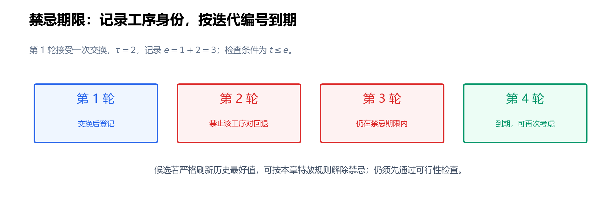

第 9 节：禁忌搜索——记忆、期限与特赦¶
状态：第一版，待 review。
本节目标：能为相邻交换设计明确的禁忌属性与到期规则，区分可行候选、禁忌候选和可选候选，并用 current/best 正确实现基础禁忌搜索。
前置：第 6 节：局部搜索、第 7 节：N5、第 8 节：SA。仍研究固定机器、正加工时间、不可抢占、无换型与运输的 JSSP；\(f(\pi)\) 是队列 \(\pi\) 的最早排程最大完工时间。
9.1 接受了一个平台步，为什么又走回去？¶
第 6 节的次优停点 \(\pi^{\mathrm L}\) 值为 12。先交换 \(M_2\) 的 \(O_{1,2},O_{2,1}\) 得到 \(\pi^{\mathrm B}\)，值仍为 12；再交换 \(M_3\) 的 \(O_{1,3},O_{2,2}\) 就能到 \(\pi^0\) 的 11。
但是允许持平以后，也可能立即在 \(M_2\) 上交换回去：
SA 用概率决定是否接受变差，却不会自动记住刚交换过哪两道工序。禁忌搜索（Tabu Search，TS）加入搜索记忆：近期刚撤销或建立的某些关系，在一段期限内限制再次改变，鼓励继续向别处探索。
记忆、禁忌条件与解除禁忌的特赦条件是 TS 的重要组成部分。Glover 的原始论文 Tabu Search—Part I讨论了这些机制。本节先实现一种小而明确的短期记忆版本，不把 TS 简化成“保存所有访问过的解”。
9.2 基础选择规则：当前邻域中最好的可选候选¶
下降法要求下一步严格改善；本节 TS 则在满足限制的候选里选目标值最低者，即使它比 current 更差，也接受。
一次迭代分四步：
- 从 current 生成候选并判定可行性。
- 检查候选移动的禁忌属性是否仍在有效期内。
- 检查特赦条件，确定哪些候选允许参与选择。
- 在允许的候选中选目标值最小者，执行移动并更新记忆。
这里没有 SA 的指数接受概率，也没有温度。确定性版本在给定初始解、枚举顺序、并列规则和期限后，可以完整复现；若期限或并列选择随机化，则还需记录种子。
TS 也分别维护 current 与 best。current 可以变差，best 只在发现严格更好解时更新；最终返回独立保存的 best 队列及其排程。
9.3 禁忌属性：记工序身份，还是记数组位置？¶
本节采用无序工序对属性。若在 \(M_r\) 上交换相邻工序 \(u,v\)，登记键：
\(u,v\) 是两个具体工序，例如 \(O_{1,2},O_{2,1}\)；\(\{u,v\}\) 不区分交换前后的方向。实现可把两道工序的全局编号排序，存成 (machine, smaller_id, larger_id)。
接下来期限内，只要仍试图交换这两道工序，就匹配同一键。交换后左右位置对调，不会因顺序不同而漏掉立即回退。
只记 (machine, left_position) 不够。其他交换可能改变队列位置，之后同一位置放着另一对工序；这样既可能误禁无关移动，也可能放过真正的回退。
这是 移动属性记忆，不是完整解记忆。它只需保存少量工序对，但不保证排除所有较长循环，也可能限制从另一个状态出发的有用交换。它是一种有意粗化的记忆，需要期限和特赦配合。
另一种设计是禁止重新建立刚删除的有向机器关系，例如暂禁恢复 \(u\prec v\)；若用相邻弧属性，还需明确交换所改动的外侧弧。不同属性产生不同搜索过程，不能只报告“用了 tabu list”就认为算法已经定义完整。
9.4 Tenure：把到期时刻写成一个可检查的不等式¶
禁忌期限（tabu tenure）记为 \(\tau\)。本节以完成移动的迭代轮次计数，而不是候选评价次数或秒数；设 \(t\) 是当前迭代编号，从 1 开始。
在第 \(t\) 轮选中移动后，登记该键的到期编号：
未来第 \(t'\) 轮检查该键时，采用：
未登记键的到期编号取 0。所以 \(\tau=2\) 时，第 1 轮交换后登记 \(e_\kappa=3\)；第 2、3 轮禁忌，第 4 轮到期。这正好限制后面两轮，避免“期限为 2，实际只限制一轮”的差一错误。

同一键若被特赦选中后再次登记，使用新旧到期编号的最大值，保证不会意外缩短原来仍有效的期限。本节固定 \(\tau=2\) 用于手算；大实例不应照搬这个数值当作推荐参数。
期限短，限制很快消失；期限长，更多候选可能同时被禁。效果还取决于邻域大小、属性定义和搜索状态，不能用“越长越能跳出局部最优”作单向判断。
9.5 Aspiration：为什么有些禁忌候选可以破例？¶
特赦条件（aspiration criterion）允许足够有价值的移动解除禁忌。本节采用常见的“严格刷新历史最好值”：
比较的是 best，不只是 current。如果 current 为 13、best 为 11，禁忌候选为 12，它虽然改善当前值，却不满足本节特赦条件。
为说明判断逻辑，假设某轮历史最好值为 12，已评价以下可行候选；这张表只演示筛选，不指定某一组 current 队列：
| 候选值 | 是否禁忌 | 是否刷新 best | 能否参加选择？ |
|---|---|---|---|
| 13 | 否 | 否 | 能 |
| 12 | 是 | 否 | 不能 |
| 11 | 是 | 是 | 能，特赦 |
持平于 best 不算特赦。有限期属性记忆可能误挡一个来自不同状态的新好解，因此特赦给它保留机会。Glover 与 Laguna 的作者教程讨论了超越当前历史最好值的特赦规则及属性记忆。
特赦只能解除搜索限制，不能解除输入约束。有环候选没有合法目标值，不进入上述比较。
9.6 Admissible move：三个筛选层次¶
本节把 可选移动（admissible move）定义为：候选可行，并且未禁忌或满足特赦。设候选移动为 \(a\)，应用后得到 \(a(\pi)\)，则：
三个层次不能混淆：
| 层次 | 由什么决定？ | 结果 |
|---|---|---|
| 可行性 | JSSP 的工艺、机器与时间约束 | 有环候选直接排除 |
| 可选性 | 当前记忆和特赦规则 | 同一可行移动在不同轮次可能不同 |
| 最终选择 | 可选候选的目标值与并列规则 | 只有选中的移动更新 current |
“有更差的可选候选”仍足以继续 TS；“所有可行候选都被禁”则是记忆造成的暂时阻塞，不能据此说 current 已局部最优或问题不可行。
9.7 三轮完整手算：平台、改善、再变差¶
使用第 6 节完整相邻交换邻域，按 \((r,i)\) 从小到大枚举，目标值并列也按该顺序选择。期限 \(\tau=2\)，初始化无禁忌记录。
起点队列与第 8 节相同：
第 1 轮：没有严格改善，选择最先枚举的等值步¶
六个候选全部可行、未禁忌，目标值按枚举顺序为：
最小值 12 出现两次，按并列规则选择 \(\operatorname{swap}_{2,1}\)，得到 \(\pi^{\mathrm B}\)。登记：
current 为 12，best 为 12。下一轮不能立刻交换该对回到 \(\pi^{\mathrm L}\)，除非满足特赦。
第 2 轮：继续前进，得到 11¶
此时只有 \(M_2\) 队列变为 \((O_{2,1},O_{1,2},O_{3,3})\)，其他队列不变。重新评价如下：
| 移动 | 候选值 | 禁忌状态 | 是否可选 |
|---|---|---|---|
| \(\operatorname{swap}_{1,1}\) | 19 | 否 | 是 |
| \(\operatorname{swap}_{1,2}\) | 16 | 否 | 是 |
| \(\operatorname{swap}_{2,1}\) | 12 | 是，\(\kappa_1\) | 否，不刷新 best |
| \(\operatorname{swap}_{2,2}\) | 17 | 否 | 是 |
| \(\operatorname{swap}_{3,1}\) | 18 | 否 | 是 |
| \(\operatorname{swap}_{3,2}\) | 11 | 否 | 是 |
选择 \(\operatorname{swap}_{3,2}\)，得到 \(\pi^0\)，current 与 best 都更新为 11。登记：
第 3 轮：最好的可选邻居也变差，仍然接受¶
以 \(\pi^0\) 为 current，重新扫描：
| 移动 | 候选值 | 禁忌状态 | 是否可选 |
|---|---|---|---|
| \(\operatorname{swap}_{1,1}\) | 14 | 否 | 是 |
| \(\operatorname{swap}_{1,2}\) | 13 | 否 | 是 |
| \(\operatorname{swap}_{2,1}\) | 12 | 是，\(3\le e_{\kappa_1}=3\) | 否 |
| \(\operatorname{swap}_{2,2}\) | 12 | 否 | 是 |
| \(\operatorname{swap}_{3,1}\) | 14 | 否 | 是 |
| \(\operatorname{swap}_{3,2}\) | 12 | 是，\(3\le e_{\kappa_2}=4\) | 否 |
本轮没有候选严格优于 best 的 11，所以特赦不触发。选择唯一目标值为 12 的可选候选 \(\operatorname{swap}_{2,2}\)，将 \(M_2\) 队列改为 \((O_{2,1},O_{3,3},O_{1,2})\)。
current 变为 12，best 仍为 11；登记交换的 \(O_{1,2},O_{3,3}\)，到期编号为 5。三轮 current 轨迹为 \(12\to12\to11\to12\)，best 轨迹为 \(12\to12\to11\to11\)。
本例中 11 的全局最优性已有独立证据；演示仍继续一轮，是为了说明 TS 的状态与接受规则。实际实现若得到有效下界并闭合，可以提前停止。
9.8 换成 N5，会发生什么？¶
本章手算用全相邻交换，便于与第 6、8 节直接比较。若换成第 7 节的一条路径 N5，候选更少，TS 的选择和轨迹也会改变。
例如 \(\pi^0\) 的 N5 只有 \(M_1\) 上交换 \(O_{3,2},O_{2,3}\)，候选值为 13。若该移动未禁忌，基础 TS 会接受 \(11\to13\)；它不能选择本节全相邻邻域中的其他值为 12 的候选，因为它们根本没有被生成。
较小邻域每轮评价快，但同时禁掉少量候选就可能无路可走。记忆策略和邻域必须一起设计；仅把完整邻域的期限照搬到 N5，可能产生不同程度的阻塞。
N5 本身的可达性限制也不会因禁忌记忆而消失。多起点、扰动或偶尔扩大邻域属于额外策略，应明确记录触发条件与预算。
9.9 无可选移动时怎么办？¶
必须事先规定策略，不能依赖程序偶然保留的临时变量。本节基础实现选择：停止本次轨迹并返回 best，停止原因记为“无可选移动”。
其他合理变体包括：扩展候选集；解除最早到期的一部分限制后重新选择；从新初始解重启。采用放宽策略时，日志要能区分特赦、到期和强制解除，它们不是同一种事件。
如果当前所有可行候选被禁，单纯“再扫描一遍”不会改变期限。若使用空转轮次推动到期，要把它明确定义为算法的一部分；本节不通过悄悄递增计数来解除限制。
选择哪一种属于算法设计，不存在一个脱离邻域、预算与实验结果的统一最佳答案。无可选移动不证明整个 JSSP 不可行，也不证明 best 最优。
9.10 基础 TS 伪代码¶
key 使用无序工序对，expiry 是到期编号映射，默认值 0；期限是固定非负整数。每轮完整扫描可行邻域，目标值并列按机器编号与左位置选择。
关键结构若用于生成候选，接受后重新计算。评价未选候选时，不能更新其禁忌键；禁忌记忆记录实际执行的轨迹，而不是所有试过的移动。
过期键可以删除以控制内存；若保留，判断仍按到期编号。时间中途停止只报告预算停止，不能报告完整邻域无改善。
9.11 期限变化与长期记忆：先分清作用¶
固定期限容易检查；随机期限例如每次从规定整数区间抽取，可减少某些固定节奏的回退，但也改变轨迹和可复现要求。自适应期限则按重复访问、停滞等信息调整，必须写明反馈规则，不能只称“动态 tenure”。
较长期的机制常分为：
| 机制 | 主要目的 | 教学例子 |
|---|---|---|
| 强化搜索，intensification | 在已发现的好区域中进一步搜索 | 从精英解重新出发，研究其周边结构 |
| 多样化，diversification | 避免持续停留于同一类队列 | 用访问频率信息偏向较少探索的关系 |
这些策略在原始 TS 文献中已有讨论。本节并未实现完整长期记忆；第 12 节再衔接优秀解集合与混合方法。参数更复杂本身不构成改进证据。
9.12 易错点与实验检查¶
| 误解或实现错误 | 应核对的地方 |
|---|---|
| TS 只接受改善 | 本节选最好的可选候选，可接受变差 |
| 禁忌就是排程不可行 | 前者来自暂时记忆，后者来自硬约束 |
| 特赦只要改善 current | 本节要求严格刷新 best |
登记交换后的 (v,u)，检查时只查 (u,v) |
使用无序对，或明确有向关系恢复规则 |
| 用数组位置代替工序身份 | 位置会随交换变化，应记录稳定工序 ID |
| 所有评价过的移动都入表 | 只登记实际执行的移动 |
| tenure 为 2 却只禁下一轮 | 用具体到期表检查差一错误 |
| 短期记忆保证永不循环 | 只限制匹配属性的近期移动，不排除全部较长循环 |
| 所有候选被禁就宣布最优 | 报告无可选移动，按预先规定策略处理 |
性能比较时记录候选评价次数与墙钟时间。TS 每轮常评价多项，SA 每步通常只评价一个提议；“都运行一万步”不代表同样计算成本。使用相同 decoder、初始化来源和时间预算，并报告多个随机重复或多起点结果。
9.13 自检题¶
- 为什么只记机器与数组位置不能可靠阻止回退？本节的属性键是什么？
- 第 5 轮执行某键，\(\tau=3\)，到期编号是多少？第 8、9 轮分别是否禁忌？
- current 为 13、best 为 11，值为 12 的可行禁忌候选是否特赦？
- 手算第 3 轮为何选 \(\operatorname{swap}_{2,2}\)，而不是另两个值为 12 的候选？接受后 best 是多少？
- 交换候选有环，却被某个评分缓存标成“比 best 好”，能否特赦？
- 无可选移动是否等于当前解无可行邻居？是否等于局部最优？
- 把 N5 换进 TS 后，\(\pi^0\) 上未禁忌的唯一候选值为 13，基础 TS 如何处理？
- 比较 SA 与 TS 时，为什么不能只固定相同迭代数？
参考答案¶
- 位置上的工序会改变，容易误禁或漏禁。本节键为 \((r,\{u,v\})\)，实现用稳定 ID 排序保存。
- \(e=5+3=8\)；第 8 轮仍禁忌，第 9 轮到期。实际还可被特赦规则解除。
- 不特赦。12 仅改善 current，没有严格优于 best 的 11。
- 另两个 12 分别匹配到期编号为 3、4 的有效禁忌键，且没有特赦；选中后 current 为 12，best 保持 11。
- 不能。先排除有环候选，错误缓存分数不构成可行性证据。
- 都不等价。可行邻居可能全部被暂时禁忌；无可选移动也不是目标值比较意义上的局部最优证明。
- 接受这个最好的可选候选，current 变成 13，best 保持 11；若已有最优性下界闭合，可另行提前停止。
- 每步或每轮评价的候选数量不同。应统一时间或合理评价预算，同时记录实际成本。
9.14 复习速记卡¶
| 要立即想起的问题 | 本节要点 |
|---|---|
| TS 怎样继续探索？ | 选最好的可选邻居，允许变差 |
| 记忆存什么？ | 本节存机器与无序工序对，不存瞬时数组位置 |
| 期限怎样算？ | 第 \(t\) 轮登记 \(e=t+\tau\)，未来轮次满足 \(t'\le e\) 时有效 |
| 什么是特赦？ | 本节为严格刷新历史 best，不能解除硬约束 |
| 什么是可选移动？ | 可行，并且未禁忌或获特赦 |
| 何时登记记忆？ | 实际执行移动以后 |
| 无可选移动怎么办？ | 按预先规定策略处理；本节返回 best 并报告原因 |
| 最终保存什么？ | 独立复制的 best 队列及重新校验的排程 |
下一节：Shifting Bottleneck 与单机子问题。我们将从“修改完整队列”转向“逐台决定机器顺序”，看分解方法怎样用 head/tail 识别瓶颈。
参考核验：2026-10-11。记忆与特赦的基本思想对照 Glover 原论文及作者教程；无序对属性、到期不等式、并列与无可选移动处理是本节明确规定的基础版本。三轮轨迹独立计算，不声称复现某篇论文的完整 JSSP 求解器。
提交前检查：三轮全部候选、禁忌期限、最终队列与 current/best 由 第 7–9 节核算与绘图脚本 重算；检查符号、表格及相对链接。最终格式检查范围见目录中的验收记录。